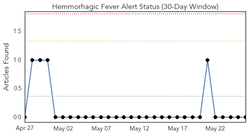
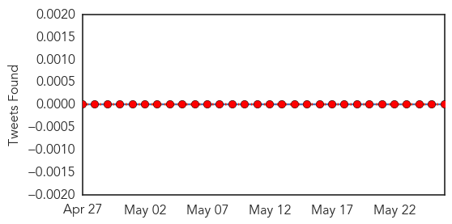
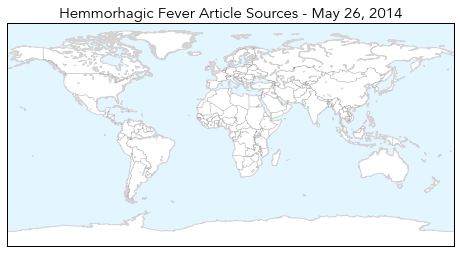
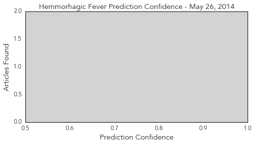
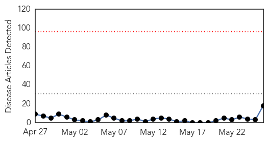
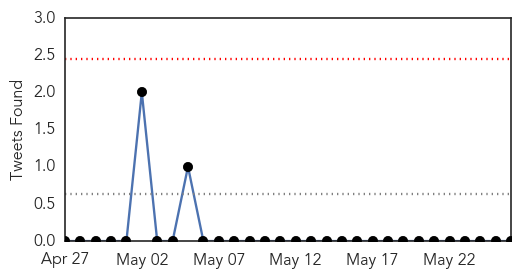
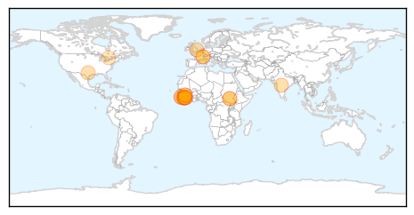
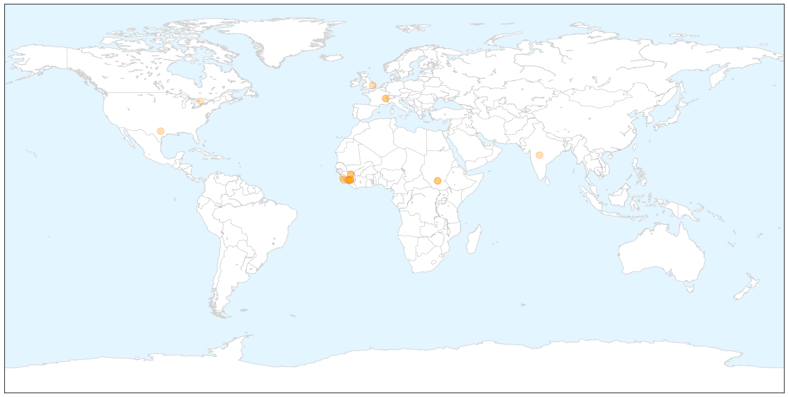
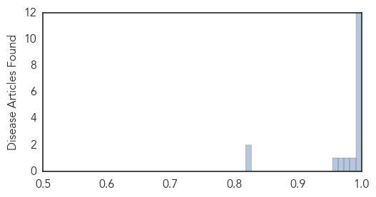

Hemmorhagic Fever
30-Day Web Trend
0 alerts, 0 warnings

30-Day Twitter Trend
0 alerts, 0 warnings

Article Locations

Article Confidences
Top Articles:
-
No articles found for May 26, 2014
Top Tweets:
-
No tweets found for May 26, 2014
Ebola
30-Day Web Trend
0 alerts, 0 warnings

30-Day Twitter Trend
0 alerts, 0 warnings

Article Locations

X

Article Confidences
Top Articles:
- 1.000
- Sierra Leone confirms first deaths
- 1.000
- Five dead as Sierra Leone records first Ebola outbreak
- 1.000
- Sierra Leone confirms first case of Ebola as epidemic spreads
- 1.000
- Ebola Virus Outbreak in Sierra Leone Records Five Deaths
- 1.000
- Four Dead in Sierra Leone Ebola Outbreak [PHOTO]
- 1.000
- Sierra Leone confirms first Ebola death
- 1.000
- Sierra Leone confirms first Ebola cases - News
- 1.000
- Five dead in first Sierra Leone Ebola outbreak — RT News
- 1.000
- Sierra Leone confirms first case of Ebola as epidemic spreads - Sierra Leone
- 1.000
- Five dead as Sierra Leone records first Ebola outbreak
- 0.999
- Five dead as Sierra Leone records first Ebola outbreak
- 0.997
- Sierra Leone cool on Ebola drugs as it pleads for aid
- 0.988
- Secret serum: Liberia Ebola drug used on Brantly is only one of many in development
- 0.981
- Five dead as Sierra Leone records first Ebola outbreak
- 0.971
- Testing Vaccines On Captive Chimps To Protect Wild Chimps—Is It Worth It? – Phenomena
- 0.960
- الاخبار المصورة
- 0.821
- Government of Canada Supports Global Efforts in Health -- OTTAWA, May 26, 2014
- 0.818
- Government of Canada Supports Global Efforts in Health
Top Tweets:
-
No tweets found for May 26, 2014